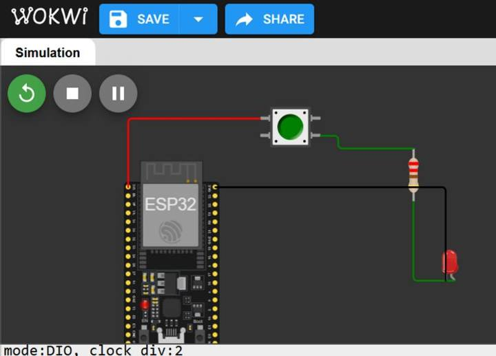

Lesson 1: Electricity, parts and your first circuit
By the end of this lesson you'll build a circuit where pressing a button lights an LED, with no code at all. You'll also be able to say what every part does and why it's connected where it is.
Time: about 6 hours over 3 sessions. Cost: nothing. Everything happens in Wokwi, a free simulator in your web browser.
How to use this page: each part has a drawing first, then a short explanation, then a video. Look at the drawing, read the words, then watch the video. If a word is new, check the word list at the bottom.
Session 1, Part A: What electricity is
Electricity behaves a lot like water pushed round a closed loop of pipe. Three words describe it, and every circuit you build uses all three.
| In the water picture | In electricity | Unit | Short form | Example from this lesson |
|---|---|---|---|---|
| The pump's push | Voltage | volt | V | The ESP32's 3V3 pin pushes with 3.3 volts |
| How narrow the pipe is | Resistance | ohm | Ω (the Greek letter omega) | The resistor you'll use is 220 Ω |
| How much water flows | Current | amp | A | Your LED will get about 0.006 A, written 6 mA |
Two size words you'll see everywhere:
- milli (m) means one thousandth. 1 mA = 0.001 A. So 6 mA = 0.006 A.
- kilo (k) means one thousand. 1 kΩ = 1,000 Ω. So 10 kΩ = 10,000 Ω.
Ohm's law ties the three together:
V = I × RV is voltage, I is current (the letter I is the standard symbol for current), and R is resistance. Cover the one you want and the other two tell you how to get it: I = V ÷ R, and R = V ÷ I.
- More push, more flow. Raise the voltage and more current flows.
- Narrower pipe, less flow. Raise the resistance and less current flows.
Ohm's Law Explained. An animated walk-through of voltage, current and resistance. Watch it after the drawing, not before. Open on YouTube
Session 1, Part B: A circuit is a loop
Current only flows when there's an unbroken path from the + side of the power source, through your parts, and back to the − side. That loop is called a circuit.
Where + and − are on the ESP32: the pin printed 3V3 is the + side. It always gives 3.3 volts while the board has power. Every pin printed GND is the − side. GND means "ground", the 0-volt reference that all voltages are measured from. You'll find exactly where these pins are in Part E.
- Closed loop. Every part is connected end to end, so current flows and the LED lights.
- Open loop. Somewhere the path is broken. Nothing flows anywhere in the loop, not even in the parts before the gap. A push button is simply a gap you can close with your finger.
- Short circuit. A wire connects + straight to −, skipping the parts. With almost no resistance, Ohm's law says the current gets huge. On real hardware that can overheat wires, damage the board, or trip your laptop's USB port. Always double-check before connecting 3V3 or 5V to anything.
Two facts that confuse beginners:
- Order doesn't matter in a single loop. The resistor can sit before or after the LED. The same current flows through every part of one loop. This short video explains why.
- Direction. In this course current always flows from + to −. (Inside the wire, electrons actually drift the other way, but every diagram and datasheet uses + to −, so we do too.)
Session 1, Part C: Meet the parts
You need four kinds of part for this lesson. Only the LED has a right way round, so that's the one to check every time.
LED (light-emitting diode)
An LED lights up when current flows into the anode (+, long leg) and out of the cathode (−, short leg). Put it in backwards and it simply stays dark. I tested this in Wokwi: a reversed LED does not light.
The legs can be cut to the same length, so there's a second clue. The plastic rim at the bottom has a flat edge on the cathode (−) side.
In Wokwi the LED's two pins are named A (anode) and C (cathode). Hover your mouse over a leg to see its name.
Why an LED always needs a resistor. An LED can't limit its own current. Once it's on, it lets almost unlimited current through, enough to destroy it and damage the pin feeding it. The resistor is the narrow pipe from Part A. It holds the current to a safe level.
Here's the sum for your circuit. A red LED uses up about 2 V of the 3.3 V, which leaves 1.3 V across the resistor. With 220 Ω: 1.3 ÷ 220 ≈ 0.006 A, or 6 mA. That's bright enough to see, and well under the roughly 20 mA a typical small LED can take.
LED Basics. Covers polarity, the voltage an LED uses, and current. Open on YouTube
Why does an LED need a resistor?. A short, simple explanation. Open on YouTube
Resistor
A resistor limits current. It has two legs and no + or −, so either way round works. Its value is shown by coloured bands. Hold it with the gold or silver band on your right and read from the left.
| Colour | Number | As the 3rd band: add this many zeros |
|---|---|---|
| Black | 0 | none |
| Brown | 1 | 1 zero (× 10) |
| Red | 2 | 2 zeros (× 100) |
| Orange | 3 | 3 zeros (× 1,000) |
| Yellow | 4 | 4 zeros |
| Green | 5 | 5 zeros |
| Blue | 6 | 6 zeros |
| Violet | 7 | |
| Grey | 8 | |
| White | 9 |
The 4th band is accuracy: gold means ±5%, silver means ±10%. The three values you'll meet most:
- 220 Ω = red, red, brown (2, 2, then add 1 zero)
- 1 kΩ = brown, black, red (1, 0, then add 2 zeros = 1,000)
- 10 kΩ = brown, black, orange (1, 0, then add 3 zeros = 10,000)
Some resistors, often blue-bodied ones, have 5 bands. Then the first three bands are digits and the 4th says how many zeros. In Wokwi you don't read bands: you click the resistor and type its value. A new Wokwi resistor starts at 1,000 Ω (1 kΩ), so you must change it.
How to read a resistor's value. Step by step through the colour code. Open on YouTube
Push button
A push button is a gap in the circuit that closes while you press it. It has four legs in two pairs. Each pair is always joined inside. Pressing joins pair 1 to pair 2. In Wokwi the legs are named 1.l, 1.r, 2.l and 2.r (l = left, r = right). Hover to check.
The rule: connect one side of your circuit to a 1 leg and the other side to a 2 leg. If you wire 1.l to 1.r, the button does nothing, because those were already joined.
Real buttons look the same but are easy to put in turned 90 degrees. In Week 4 you'll find the pairs on a real button with a multimeter.
4-pin pushbuttons explained. A close look at how the four pins are connected. Open on YouTube
Jumper wires
Jumper wires join parts together. Ends are either male (a pin) or female (a socket). You'll use male-to-male on a breadboard. Colour makes no electrical difference, but always using red for + and black for GND makes mistakes easy to spot.
Session 1, Part D: The breadboard
A breadboard lets you connect parts by pushing their legs into holes, with no soldering. Under the plastic, metal clips join certain holes together. Knowing which holes are joined is the whole skill.
- Strips of five. In each numbered column, holes a, b, c, d and e are joined. So are f, g, h, i and j. Anything pushed into the same strip is connected.
- The centre gap. The a–e strip is not joined to the f–j strip below it.
- Rails. The long rows along the top and bottom edges are the power rails. Every hole along one rail is joined. By habit, connect the red (+) rail to 3V3 and the blue (−) rail to GND.
- Legs in different strips. A part's two legs must sit in two different strips. Put both legs of a resistor in one strip and the strip joins them, so the resistor does nothing.
One thing to check on real boards: on some full-size breadboards each rail is split in the middle. A break in the printed red or blue line shows it.
Wokwi's breadboard: the half-size breadboard has 30 columns, rows a to j, and four rails (two at the top, two at the bottom). I tested it: a wire into the + rail and a resistor in a strip passed current exactly as these rules say.
How to Use a Breadboard (Science Buddies). Starts at 1:57, what's inside. Then rows and columns at 2:40, power rails at 3:08, a simple LED circuit at 5:00, and common mistakes at 6:32. Open on YouTube
Session 1, Part E: The ESP32's power pins
The ESP32 board has 38 pins, but today you need only two kinds: 3V3 (your + side) and GND (your − side). Lesson 2 goes through every other pin.
What the board is. The silver square marked ESP32 holds the chip: a tiny computer that runs your programs. The black board around it is a development board. It adds the USB port, the pins, and a power circuit that turns your laptop's 5 V into the 3.3 V the chip needs. A new ESP32 project in Wokwi uses this exact board, the ESP32-DevKitC V4. I checked its pin list directly in Wokwi.
- 3V3 (top left): gives a steady 3.3 V whenever the board has power. It's your + side.
- GND (three of them: left, top right, and right): 0 V, your − side. All three are joined inside the board, so use whichever is closest.
- 5V (bottom left): the raw 5 V from the USB cable. You won't use it in this lesson.
- EN and Boot are the two small buttons by the USB port. EN restarts the board. Boot is used when loading programs. Neither matters yet.
Real boards are labelled differently. Cheap ESP32 boards come from many makers, and the printing varies: GPIO 2 might read 2, IO2, G2 or even D2. On another popular board, the 30-pin "DevKit V1", the pin printed D2 really is GPIO 2. So never trust a label alone. Always check the pin diagram for the exact board in front of you. We'll do that together when your real board arrives in Week 4.
Session 2: Build it in Wokwi, click by click
You'll build the circuit in two stages: first an LED that's simply on, then the same circuit with a button. There's no code to write. The board's 3V3 pin gives power the moment the simulation starts, and I confirmed an LED wired this way lights in Wokwi with the starter code untouched.
Get set up (10 minutes)
- Go to wokwi.com and click Sign in (top right). A free account lets you save and share your work.
- Open wokwi.com/projects/new/esp32. A new ESP32 project opens.
- Look at the screen. On the left is the code editor with three tabs: sketch.ino (your program), diagram.json (a text list of your parts and wires) and Library Manager. On the right is the Simulation pane showing the board, with three round buttons: green ▶ starts the simulation, blue + adds a part, grey ⋮ is a menu.
- Leave sketch.ino exactly as it is. Today the circuit does everything.
Four moves you'll use all the time:
- Find a pin's name: hover the mouse over a pin and wait. Its name pops up. Do this before every wire.
- Draw a wire: click one pin, then click the pin you want to join it to.
- Delete a part or wire: click it, then press the Delete key.
- Rotate a part: click it, then press R. This only works while the simulation is stopped.
Build 1: an LED that's simply on
- Click the blue +, type LED, and click the LED. Drag it to some empty space right of the board.
- Click + again, type resistor, and add one. Click the resistor and change its value from 1000 to 220 Ω.
- Hover over the board's top-left pin until it says 3V3. Click it, then click either leg of the resistor. That's your first wire.
- Click the resistor's other leg, then click the LED leg named A.
- Click the LED leg named C, then click the GND pin at the board's top right.
- Click green ▶. The LED lights up.
Experiment 1: backwards LED. Click the square ■ to stop the simulation. Delete the two LED wires and reconnect them swapped: resistor to C, and A to GND. Press ▶. The LED stays dark. I tested this. Now put it back the right way.
Build 2: add the button
This is the circuit you'll submit. The map shows every wire and the exact pin names.
- Stop the simulation. Click +, type pushbutton, and add it above the resistor.
- Delete the wire between 3V3 and the resistor.
- Wire 1: click 3V3, then the button leg named 1.l.
- Wire 2: click the button leg named 2.r, then the free leg of the resistor.
- Wire 3 (resistor to LED A) and wire 4 (LED C to GND) are already there from Build 1.
- Press ▶. The LED is off. Click and hold the button: the LED lights. Let go: it goes off.
- To keep the button pressed without holding, Ctrl-click it (Cmd-click on a Mac). Ctrl-click again to release.
- Click SAVE. Then click SHARE and copy the link. That link is part of your submission.
Why it works: the button is the gap from Part B. Wire 1 reaches pair 1 and wire 2 leaves from pair 2. The loop is only complete while pressing joins the two pairs.

Build 3 (optional): the same circuit through a breadboard
Click +, search breadboard, and add the half-size one. Build the same loop again, but route every connection through the breadboard. Wire 3V3 to a hole on the + rail and GND to a hole on the − rail. Then wire each part's legs to holes so each leg sits in its own strip, joining parts by sharing strips. Hover over holes to check you're in the strip you meant.
Session 3: Submit for review
Send all of this in one message in our chat. Answer in your own words. Short and plain is fine, and copied text doesn't count.
1. Your Wokwi link for Build 2, the button circuit. (Plus Build 3 if you did it.)
2. Concept questions
- Explain voltage, current and resistance using the water picture.
- Why does the LED stay dark when it's wired backwards?
- In Build 2, trace the path the current takes while the button is pressed. Name every pin it passes through, starting at 3V3 and ending at GND.
- Why would wiring 3V3 to 1.l and the resistor to 1.r not work as a switch?
- On the board in Wokwi, which pin is GPIO 2? Why must you never use the pin printed D2?
- In Experiment 2, what did Wokwi show? What would happen with real parts?
3. Ohm's law problems (show your working)
- A 9 V battery is connected across a 450 Ω resistor. What current flows, in mA?
- You want 15 mA through an LED that uses 2 V, powered from 5 V. What resistor do you need?
- Two 100 Ω resistors are connected end to end, in one loop. What's the total resistance?
- Your LED circuit uses 1 kΩ instead of 220 Ω. Is the LED brighter or dimmer on real hardware? Roughly what current flows?
- Use Ohm's law to explain what happens if an LED is connected to 3V3 with no resistor.
4. Read these resistors (4-band, gold last)
- Brown, black, red
- Yellow, violet, brown
- Orange, orange, brown
Word list
| Word | What it means |
|---|---|
| Voltage (V) | The push that drives current. Measured in volts. |
| Current (I) | How much electricity flows past a point each second. Measured in amps (A) or milliamps (mA). |
| Resistance (R) | How much something holds back current. Measured in ohms (Ω). |
| Ohm's law | V = I × R. Know any two and you can work out the third. |
| milli (m) | One thousandth. 1 mA = 0.001 A. |
| kilo (k) | One thousand. 1 kΩ = 1,000 Ω. |
| Circuit | A complete loop that current can flow round. |
| Open circuit | A loop with a gap, so nothing flows. |
| Short circuit | A path from + to − with almost no resistance. Dangerous on real hardware. |
| 3V3 | The ESP32 pin that gives a steady 3.3 V. Your + side. |
| GND (ground) | The 0 V reference, your − side. The ESP32-DevKitC has three GND pins, all joined. |
| LED | Light-emitting diode. Lights only when current flows from anode to cathode. |
| Anode | The LED's + leg: the long leg. Called A in Wokwi. |
| Cathode | The LED's − leg: the short leg, on the flat side of the rim. Called C in Wokwi. |
| Resistor | A part that limits current. Two legs, no direction. |
| Colour code | The coloured bands that show a resistor's value. |
| Push button | A switch that closes the circuit while pressed. Four legs in two always-joined pairs. |
| Breadboard | A board for building circuits without soldering. Holes are joined in strips of five and along the rails. |
| Rail | A long row of joined holes along a breadboard's edge, used for + and −. |
| Jumper wire | A wire with a pin (male) or socket (female) on each end. |
| Development board | A board that carries the ESP32 chip and adds USB, pins and power. |
| GPIO | General-purpose input/output: a pin your program can control or read. That's Lesson 2. |
| Wokwi | A free online simulator for circuits and microcontrollers. It checks connections, not current. |
Sources
- Wokwi parts documentation: LED, resistor, push button, diagram format
- Wokwi behaviour and the ESP32-DevKitC V4 pin list were checked directly in a new Wokwi ESP32 project on 15 November 2026.